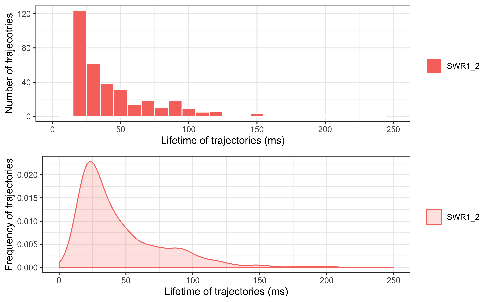
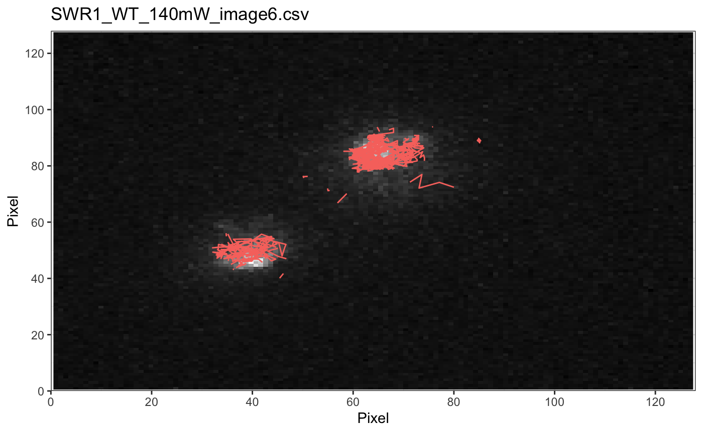
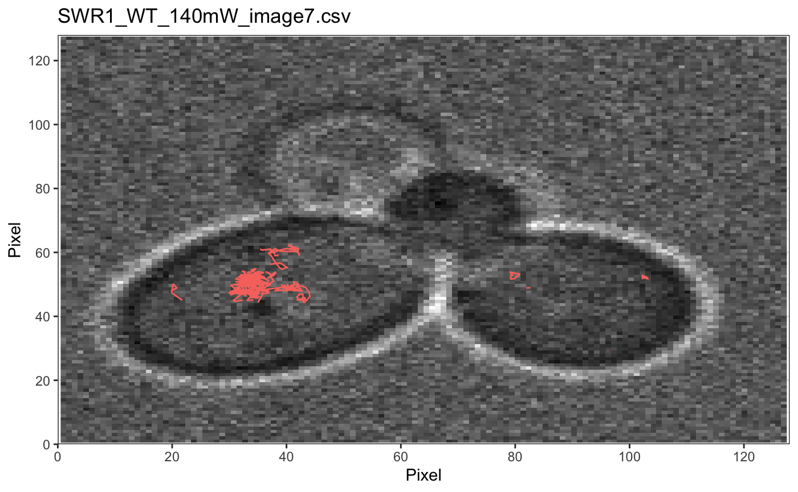
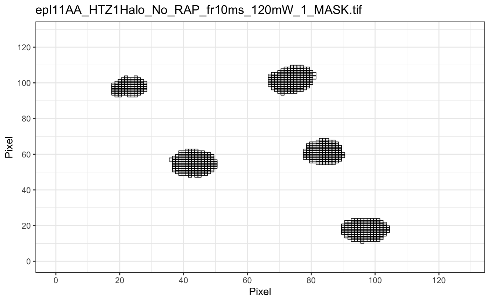
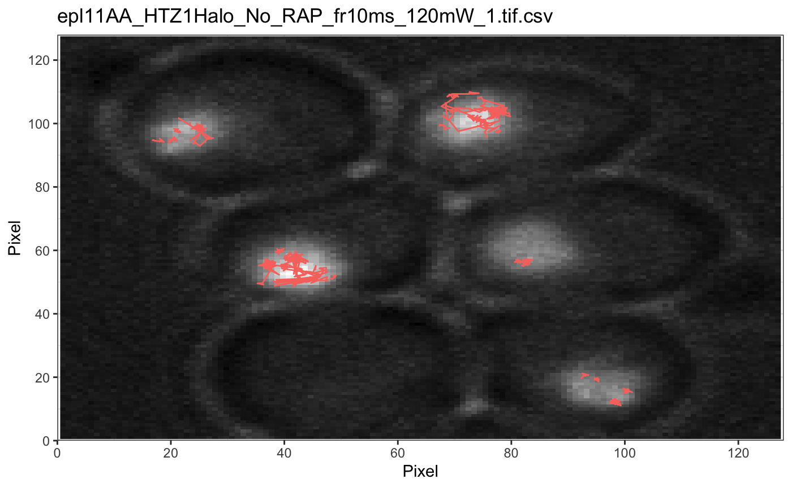

Sojourner: an R package for statistical analysis of single molecule trajectories
Sheng Liu
Department of Biology, Krieger School of Arts and Sciences, Johns Hopkins UniversitySun Jay Yoo
Department of Biomedical Engineering, Johns Hopkins UniversityXiaona Tang
Department of Biology, Krieger School of Arts and Sciences, Johns Hopkins UniversityYoung Soo Sung
Department of Computer Science, Johns Hopkins UniversityCarl Wu
Department of Molecular Biology and Genetics, School of Medicine, Johns Hopkins University2019-07-15
Source:vignettes/sojourner-vignette.Rmd
sojourner-vignette.RmdIntroduction
A basic task in single molecule tracking is to determine diffusion coefficient from molecule trajectories identified after initial image data acquisition. The trajectory (term used interchangeably with “tracks”) of a molecule is presented as a table of \(x\),\(y\) and \(z\) coordinates in the unit of pixel, which then can be converted to other measurement, such as in \(\mu\)m, according to the resolution of the camera. The package sojourner provides methods to calculate diffusion coefficient by using mean square displacement (MSD) based, displacement cumulative distribution function (CDF)-based, as well as hidden Markov model (HMM) based methods (in next release) from such input file. This vignette explains some basic usage of the package.
Input Data Preparation
Storing Track Information
The input file for sojourner is the Diatrack (.txt or .mat), ImageJ (.csv), SlimFast (.txt), or Utrack (.mat) output file. Tracks are extracted from the output files and then stored in a two-level list: (1) the first level is a list of folder names; and (2) the second level is a list of tracks.
A naming scheme is used in the source code of the sojourner package as follow: trackl denotes a list of tracks; and trackll, denotes a list of folders, each containing the tracks. The coordinates of tracksare stored in a table-like data structure data.frame.
Reading in Track Data with createTrackll()
folder=system.file("extdata","SWR1_2",package="sojourner")
trackll = createTrackll(folder=folder, input=3)##
## Reading ParticleTracker file: SWR1_WT_140mW_image6.csv ...
##
## mage6 read and processed.
##
## Reading ParticleTracker file: SWR1_WT_140mW_image7.csv ...
##
## mage7 read and processed.
##
## Process complete.trackll <- mergeTracks(folder=folder, trackll=trackll)##
## Merging of folder SWR1_2 complete.str(trackll,max.level=2, list.len=5) ## List of 1
## $ SWR1_2:List of 346
## ..$ mage6.1.4.1.1 :'data.frame': 4 obs. of 4 variables:
## ..$ mage6.2.2.2.2 :'data.frame': 2 obs. of 4 variables:
## ..$ mage6.4.9.3.3 :'data.frame': 9 obs. of 4 variables:
## ..$ mage6.5.8.4.4 :'data.frame': 8 obs. of 4 variables:
## ..$ mage6.11.12.5.5 :'data.frame': 12 obs. of 4 variables:
## .. [list output truncated]This folder named “SWR1” has in total 346 tracks. Folder name is after the first-level “$” sign, track name is after the second-level “$” sign. To see coordinates of an individual track, you can specify the folder name and the track name.
# specify the folder name and the track name
trackll[["SWR1_2"]]["mage6.1.4.1.1"]
# alternatively, specify the index of the folder and the track
# trackll[[1]][1]## $mage6.1.4.1.1
## x y z Frame
## 1 40.32 49.36 1 1
## 2 41.03 47.33 1 2
## 3 41.05 48.43 1 3
## 4 40.90 49.09 1 4The naming scheme for the list of track list is as follows:
Track List: [full name of input file]
Track: [Last five characters of the file name].[Start frame].[Length].[Track].[Index in overall list (will differ from Track # when merging)]
Plotting Tracks
The first thing one may want to do is to see how the tracks look like in 2-D space. The track name is useful in this case if one wants to see specific trajectories and its associated movies.
All one needs to do is to create a .csv file contains trajectory names in its first column. sojourner package contains such an example .csv file.
# specify the path of the file containing trajectory index names, index file
index.file2=system.file("extdata","INDEX","indexFile2.csv",package="sojourner")
# specify the folders containing the output files
folder1=system.file("extdata","SWR1_2",package="sojourner")
folder2=system.file("extdata","HTZ1",package="sojourner")
# plot trajectories specified in the trajectory index file
plotTrackFromIndex(index.file=index.file2, movie.folder=c(folder1,folder2))The output plots the tracks based on its name, with the information contained in its name (i.e. start frame and length/duration), one can also pull out its movie. See ? plotTrack for more plotting options.
Distribution of Trajectory Lengths with dwellTime()
One maybe interested to see the distribution of the (time) length of the tracks. This can be done by:
dwellTime(trackll,plot=TRUE) # default t.interval=10, x.scale=c(0,250)
Filter Tracks on Length with filterTrack()
In the previous section, we can see majority of the track lengths centered at 20 ms which is 2 frames. If we intend to only analyze frames length at specific range, one can use the filterTrack() function.
trackll=filterTrack(trackll,filter=c(min=7,max=Inf))## applying filter, min 7 max InfData Manipulation
Below is a detailed description of functions of sojourner for importing, exporting and processing of single molecule trajectories.
Reading Data
createTrackll()
Description
Take in Diatrack (.txt or .mat), ImageJ (.csv), SlimFast (.txt), or U-Track (.mat) input from a folder to output a list of track lists (trackll).
Parameters
| Parameter | Description |
|---|---|
interact (default FALSE) |
Open interactive menu to choose the desired folder by selecting any file in it and select input type (script will process all files of that type in this folder). |
folder (specify, unless interact = TRUE) |
Full path output file folder (ensure each folder has files of only one input type). |
input (specify, unless interact = TRUE) |
Input file type (Diatrack .txt file = 1; Diatrack .mat session file = 2; ImageJ .csv file = 3; SlimFast .txt file = 4; Utrack .mat file = 5). |
ab.track (default FALSE) |
Use absolute coordinates for tracks. |
cores (default 1) |
Number of cores used for parallel computation. This can be the cores on a workstation, or on a cluster. Each core will be assigned to read one file when in parallel. |
frameRecord (default TRUE) |
Add a fourth column to the track list after the \(x\),\(y\),\(z\)-coordinates for the frame that coordinate point was found (especially helpful when linking frames). Highly recommended to leave on. |
Notes
(When reading only Diatrack .mat session files (input = 2), intensities will also be saved after the frame column)
It is highly advised that the frame record option be left on to preserve the most information, especially when linking frames. If the frame record option is turned on for reading Diatrack .txt files (input = 1), take note that the frame record is artificially created as consecutive frames after the given start frame. Otherwise, all other data types naturally encode the frames of every coordinate point.
The pre-censoring of single-frame tracks is dependent on the tracking software. For highest fidelity track data, use Diatrack (.mat) session files. If the initial creation of the trackll does not have a frame record, future exports and imports of the trackll will only preserve the start frames.
If the cores are set to the maximum number of cores available on the system, the script may return a error after processing all the files. This error is due to the requirement of some systems to have one core open for system functions. This error will not affect the trackll output, but to avoid it, one can input one less than the maximum number of cores available.
The naming scheme for the list of track list is as follows:
Track List: [full name of input file]
Track: [Last five characters of the file name].[Start frame].[Length].[Track].[Index in overall list (will differ from Track # when merging)]
(The last five characters of the file name, excluding the extension, cannot contain “.”)
Aditional Information
Using
createTrackll()is equivalent to usingreadDiatrack(),readDiaSessions(),readParticleTracker(), andreadSlimFast()with their corresponding input files.If the frame record in the fourth column needs to be deleted in a single track list, call
removeFrameRecord()with the track list as the only input.
Examples
# Designate a folder and then create trackll from DiaTrack .txt data
folder=system.file("extdata","SWR1_2",package="sojourner")
trackll = createTrackll(folder=folder, input=3)
# Alternatively, use interact to open file browser and select input data type
# trackll <- createTrackll(interact = TRUE)##
## Reading ParticleTracker file: SWR1_WT_140mW_image6.csv ...
##
## mage6 read and processed.
##
## Reading ParticleTracker file: SWR1_WT_140mW_image7.csv ...
##
## mage7 read and processed.
##
## Process complete.Processing Data
linkSkippedFrames()
Parameters
| Parameter | Description |
|---|---|
trackll (specify) |
A list of track lists. |
tolerance (specify) |
Distance tolerance level measured in pixels after the frame skip. |
maxSkip (specify) |
Maximum number of frames a trajectory can skip. |
cores (default 1) |
Number of cores used for parallel computation. This can be the cores on a workstation, or on a cluster. Tip: each core will be assigned to read in a file when paralleled. |
Notes
Given user input for a tolerance level to limit how far the next point after the skip can deviate from the last point in pixel distance and a maximum number of frame skips possible, all trajectories falling within these parameters are automatically linked, renamed, and ordered accordingly. For a maxSkip example, if the maxSkip for a trajectory ending in frame 7 was 3, the next linked trajectory can start up to a maximum frame of 11.
Although not required, in order for the output to have a frame record column (recommended), the input must have one as well.
The naming scheme for each linked track is as follows:
[Last five characters of the file name].[Start frame #].[Length].[Track #].[# of links]
Track List: [full name of input file]
Track: [Last five characters of the file name].[Start frame].[Length].[Track].[# of links].[Index in overall list (will differ from Track # when merging)]
(Note: The last five characters of the file name, excluding the extension, cannot contain “.”)
Examples
# Basic function call of linkSkippedFrames
trackll.linked <- linkSkippedFrames(trackll, tolerance = 5, maxSkip = 10)##
## Linking mage6 ...
##
## 156 links found in mage6
##
## Linking mage7 ...
##
## 112 links found in mage7
##
## Process complete.Visualization using plotNucTrackOverlay():


filterTrack()
Parameters
| Parameter | Description |
|---|---|
trackll (specify) |
A list of track lists. |
filter (default c(min=7,max=Inf)) |
Range of possible track lengths to keep. |
Examples
trackll.filter=filterTrack(trackll ,filter=c(7,Inf))## applying filter, min 7 max Inf# See the min and max length of the trackll
# trackLength() is a helper function output track length of trackll
lapply(trackLength(trackll),min)## $SWR1_WT_140mW_image6.csv
## [1] 2
##
## $SWR1_WT_140mW_image7.csv
## [1] 2lapply(trackLength(trackll.filter),min)## $SWR1_WT_140mW_image6.csv
## [1] 7
##
## $SWR1_WT_140mW_image7.csv
## [1] 7Visualization using plotNucTrackOverlay():

trimTrack()
Parameters
| Parameter | Description |
|---|---|
trackll (specify) |
A list of track lists. |
trimmer (default c(min=1,max=32)) |
Range of track lengths allowed in output, otherwise trimmed. |
Examples
## applying trimmer, min 1 max 20# See the min and max length of the trackll
# trackLength() is a helper function output track length of trackll
lapply(trackLength(trackll),max)## $SWR1_WT_140mW_image6.csv
## [1] 30
##
## $SWR1_WT_140mW_image7.csv
## [1] 15lapply(trackLength(trackll.trim),max)## $SWR1_WT_140mW_image6.csv
## [1] 20
##
## $SWR1_WT_140mW_image7.csv
## [1] 15Visualization using plotNucTrackOverlay():

maskTracks()
Parameters
| Parameter | Description |
|---|---|
folder (specify) |
Full path to the output files. |
trackll (specify) |
A list of track lists. |
Notes
IMPORTANT: It will take an extremely long time to mask large datasets. Filter/trim first using filterTrack() and trimTrack(), then mask using maskTracks()! Note the mask file should have the same name as the output files with a "_MASK.tif" ending. If there are more mask files than trackll, masking will fail. If there are less mask files, trackls without masks will be deleted. Users can use plotMask() and plotTrackOverlay() to see the mask and its effect on screening tracks.
Examples
# Basic masking with folder path with image masks
folder = system.file("extdata","ImageJ",package="sojourner")
trackll = createTrackll(folder, input = 3)##
## Reading ParticleTracker file: epl11AA_HTZ1Halo_No_RAP_fr10ms_120mW_1.tif.csv ...
##
## 0mW_1 read and processed.
##
## Reading ParticleTracker file: epl11AA_HTZ1Halo_No_RAP_fr10ms_120mW_2.tif.csv ...
##
## 0mW_2 read and processed.
##
## Process complete.trackll.filter=filterTrack(trackll ,filter=c(7,Inf))## applying filter, min 7 max Inftrackll.masked <- maskTracks(folder = folder, trackll = trackll.filter)## Reading mask file epl11AA_HTZ1Halo_No_RAP_fr10ms_120mW_1_MASK.tif
## Reading mask file epl11AA_HTZ1Halo_No_RAP_fr10ms_120mW_2_MASK.tif
##
## All files masked.# Plot mask
mask.list=list.files(path=folder,pattern="_MASK.tif",full.names=TRUE)
plotMask(folder)##
## Reading mask file epl11AA_HTZ1Halo_No_RAP_fr10ms_120mW_1_MASK.tif
##
## Reading mask file epl11AA_HTZ1Halo_No_RAP_fr10ms_120mW_2_MASK.tif
##
## Done!# If nuclear image is available
plotNucTrackOverlay(folder=folder,trackll=trackll)
plotNucTrackOverlay(folder=folder,trackll=trackll.masked)

mergeTracks()
Parameters
| Parameter | Description |
|---|---|
folder (specify) |
Full path to the output files. |
trackll (specify) |
A list of track lists. |
Notes
IMPORTANT: Once a trackll has been merged, it cannot be masked using maskTracks().
Merging creates the following data structure: (1) first level is the folder name, (2) second level is a list of data.frames/tracks from all output files merged into one.
If not merged, track lists takes the name of individual files in the folder. If merged, the single merged track list takes the folder name.
Examples
# Read data
folder=system.file("extdata","SWR1_2",package="sojourner")
trackll = createTrackll(folder=folder, input=3)##
## Reading ParticleTracker file: SWR1_WT_140mW_image6.csv ...
##
## mage6 read and processed.
##
## Reading ParticleTracker file: SWR1_WT_140mW_image7.csv ...
##
## mage7 read and processed.
##
## Process complete.# Basic masking with folder path with image masks
trackll.merged <- mergeTracks(folder = folder, trackll = trackll)##
## Merging of folder SWR1_2 complete.Exporting Data
exportTrackll()
Description
Take in a list of track lists (trackll) and export it into row-wise (ImageJ/MOSAIC) .csv files in the working directory.
Parameters
| Parameter | Description |
|---|---|
trackll |
A list of track lists. |
cores (default 1) |
Number of cores used for parallel computation. This can be the cores on a workstation, or on a cluster. Tip: each core will be assigned to read in a file when paralleled. |
Notes
The reason why ImageJ/MOSAIC style .csv export was chosen is because it fully preserves track frame data, while maintaining short computation time and easy readability in Excel/etc.
In order to import this .csv export back into a trackll at any point (while preserving all information), select input = 3 in createTrackll().
If the track list does not have a fourth frame record column (not recommended), it will just output the start frame of each track instead and will take noticeably longer.
It is not recommended that exportTrackll be run on merged list of track lists (trackll). Also, ensure that the input trackll is a list of track lists and not just a track list.
The naming scheme for each export is as follows:
[yy-MM-dd][HH-mm-ss][Last five characters of the file name].csv
Examples
#Basic function call to exportTrackll into current directory
exportTrackll(trackll)
#Get current working directory
getwd()
#Import export save back into a trackll
trackll.2 <- createTrackll(folder = getwd(), input = 3)Calculating Diffusion Coefficient Using MSD-Based Method
# Specify folder with data
folder=system.file("extdata","HSF",package="sojourner")
# Create track list
trackll<-createTrackll(folder=folder, interact=FALSE, input=3, ab.track=FALSE, cores=1, frameRecord=TRUE)
# Filter/choose tracks 3 frames or longer for all analysis
trackll.fi<-filterTrack(trackll=trackll, filter=c(min=3,max=Inf))
# Apply mask and remove tracks outside nuclei
trackll.fi.ma<-maskTracks(folder,trackll.fi)
# Overlay all tracks on nuclei
plotNucTrackOverlay(folder=folder,trackll=trackll.fi,cores=1, max.pixel=128,nrow=2,ncol=2,width=16,height=16)
# Overlay tracks after nuclear mask
plotNucTrackOverlay(folder=folder,trackll=trackll.fi.ma,cores=1, max.pixel=128,nrow=2,ncol=2,width=16,height=16)
# Overlay tracks color coded for diffusion coefficient
plotTrackOverlay_Dcoef(trackll=trackll.fi.ma, Dcoef.range=c(-2,1))
# Merge tracks from different image files in the folder
trackll.fi.ma.me=c(mergeTracks(folder, trackll.fi.ma))
# calculate MSD for all tracks longer than 3 frames
msd(trackll.fi.ma.me,dt=20,resolution=0.107,summarize=TRUE,cores=1,plot=TRUE,output=TRUE)
trackll.combine.trim=trimTrack(trackll.fi.ma.me,trimmer=c(1,11))
Dcoef(trackll=trackll.combine.trim,dt=5, filter=c(min=6,max=Inf), method="static", plot=TRUE, output=TRUE)
msd(trackll.combine.trim,dt=10,resolution=0.107,summarize=TRUE,cores=1,plot=TRUE,output=TRUE)
# Calculate all dislacement frequency and displacement CDF for all tracks longer than 3 frames
displacementCDF(trackll.combine.trim, dt=1, plot=TRUE, output=TRUE)
# Calculate all dislacement frequency and displacement CDF for all tracks longer than 3 frames
displacementCDF(trackll.combine.trim, dt=2, plot=TRUE, output=TRUE)
# EndsojournerGUI: A Shiny Interface
A Shiny app implementation of many of the core features of sojourner. Namely, the basic abilities of reading trackll video files (of all supported types), processing tracks (linking, filtering, trimming, masking, merging), and analyzing tracks (MSD, Dcoef, CDF, and dwell time). The application interface provides a code-free GUI, suited with dynamic and interactive plots, that is relatively easy to use. The app is still in alpha development and only supports the base functions needed for educational capabilities and such. A command history log, named command_history.R in the working directory, will be continuously updated each time a command is called for diagnostic, replication, and tracking purposes.
Launching
library(sojourner)
sojournerGUI()Helpful Tips
If in doubt, check the console output of each command inputted through the GUI. These will show error and warning messages as needed.
Normal distribution, compare folder, and kernel density masking features are currently not supported.
Reading tracks depends on a running session of R, as it uses its native
file.choose()function.